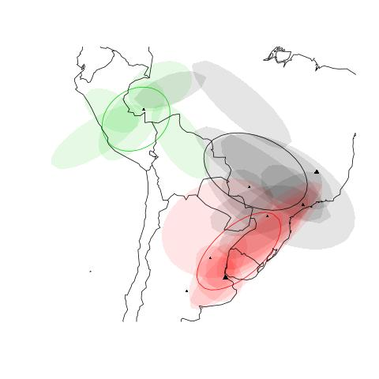
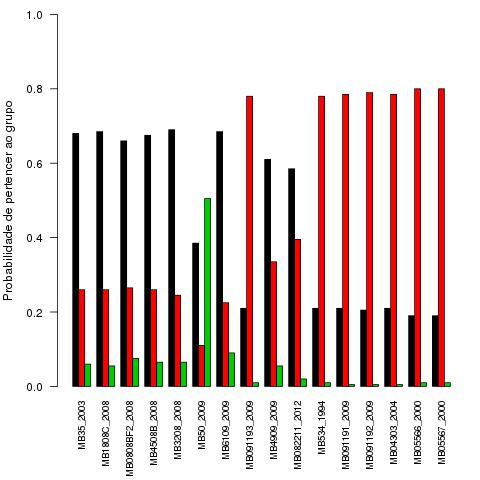
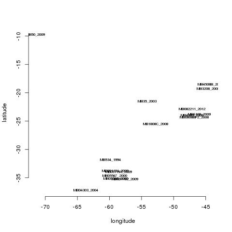

Reunião 01/04/2016
Banco de dados
This map show the genomes curretly being used the project.
 represents genomes processed by this project team
represents genomes processed by this project team
 represents genomes deposited on NCBI Genbank
represents genomes deposited on NCBI Genbank
- Muitas entradas são sequências são da vacina BCG
- Parece que dois projetos depositaram a mesma sequência Exemplo
- BCG não tem dispersão por vetores, fora de interesse a não ser talvez para construir a árvore.
Separação das linhagens em populações
Veja esse artigo aqui
No artigo ela comenta logo no resumo: Here, we specifically address relatively small scale mtDNA datasets (typically less than 500 sequences with fewer than 1000 nucleotides), focusing on ancestral location inference
Selecionando apenas uma parte do alinhamento, da para fazer a separação em populações, a saida basicamente vai ser:
Área de ocorrência da populações
Probabilidade de pertencer a uma população para cada cepa
 Artigos Interessantes nessa linha
Esse artigo os caras testa se podem considerar subpopulaçoes de Rattus norvegicus para definir estrategias de conservação Artigo
Esse artigo é muito interessante, sobre filogeografia de Mycobacterium avium, os caras estão fazendo algo bem parecido com o que a gente quer, usando genomas completos, so que eles tem uma quantidade muito maior, tanto do canada como do resto do mundo, e tem o sequenciamento (arquivo bam) para todos, se não li errado. Dai usam o samtools para achar snps, concatenam eles e fazem a filogeografia, mas com mais algumas análises, mas para uma parte usam o beast também, fazendo o mesmo modelo que estamos usando basicamente. Artigo